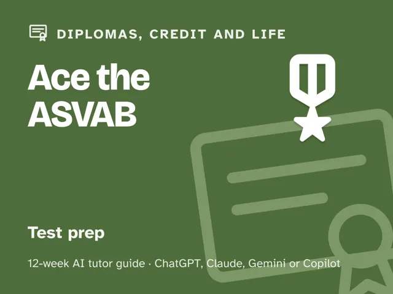
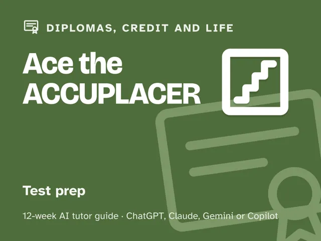

Guides / Diplomas, credit and life
Ace the ACCUPLACER
$29Instant download: a PDF to read, a browser copy, and the AI-tutor file you hand straight to any AI assistant.Buy it on Etsy →
Take the free placement check first: 15 minutes, and it names the week to start at.
Stop walking into placement testing blind. This 12-week plan starts with an honest diagnostic that maps your Reading, Writing, Arithmetic, and Quantitative Reasoning, Algebra, and Statistics skills into solid, shaky, and missing, then spends the middle weeks drilling exactly the gaps that map found, plus the WritePlacer essay and a pacing strategy for an adaptive, largely untimed test. Weeks 9 to 11 are timed practice with a review of every single miss, and week 12 is a full dress rehearsal ending in an honest score. No official test content, no score or placement guarantees, just a real plan and a coach that keeps you honest.
What you get
This is a deep digital guide, not a worksheet stack: 12 ready-to-run weekly sessions, each built around a ~60-minute core hour (the timed-practice weeks run longer, like the real test). You lead each one yourself, fully scripted, so no test-prep expertise is needed. Every session includes a plain-language concept explanation, a concrete worked example, a minute-by-minute session plan with the AI-tutor prompts built in, a "show me" checkpoint to confirm the skill actually landed, common mistakes to watch for, and practice. - 12 weekly sessions, each with a goal, a worked example, a timed session plan, a short real-world warm-up, a guided AI-tutor focus (diagnose, teach, quiz), and a measurable checkpoint. - An orientation that sets the weekly rhythm and the one rule that makes this work: review every miss until you can explain the "why," not just the right answer. - A "Never used an AI chat assistant? Start here" onboarding, which takes a complete beginner from zero to ready in about five minutes, using a free AI assistant (no paid plan needed). - Four rescue prompts in the front matter: one for when you're frustrated, one that stops the AI from handing you the answer, a plateau-breaker for when a section score stalls, and an understanding check that reviews every miss for the why. - A personal gap map you build in week 1 and revisit in week 12 to see exactly what moved.
The 12 weeks
- The Diagnostic: Mapping Your Real Starting Line
- Meet the ACCUPLACER: Format and Why Placement Matters
- Reading Comprehension: Finding What the Passage Proves
- The Writing Test: Rules You Can Spot Fast
- Arithmetic: Fluency Without a Calculator
- Quantitative Reasoning, Algebra, and Statistics I: Equations and Ratios
- Quantitative Reasoning, Algebra, and Statistics II: Exponents, Geometry, and Data
- The WritePlacer Essay, Pacing, and Test-Day Strategy
- Timed Practice #1: Reading and Writing
- Timed Practice #2: Arithmetic and Quantitative Reasoning, Algebra, and Statistics
- Timed Practice #3: Full Mixed Set and a Timed WritePlacer Essay
- Full Dress Rehearsal and the Plan Ahead
Who it's for
Students preparing for college placement testing who want a real plan instead of a random stack of practice questions. It's self-directed and built to be run by the student, useful whether you have months of runway or found out about your testing date with only a few weeks' notice.
Why this instead of a free chatbot
A raw chatbot will answer whatever you paste in, which feels productive but teaches you nothing about your actual weak spots. This pack ships what a chatbot alone lacks: an up-front diagnosis that tells you what to study first, a structured 12-week progression instead of random practice, real timed practice for a test that is usually untimed but still rewards steady pacing (the timer keeps you focused and builds stamina), and a forced review of every miss for the underlying cause: content gap, misread, or timing. A prep book gives you the same fixed set of questions regardless of what you actually need; this pack adapts to your gap map.
FAQ
- Is this official College Board content? No. This pack is not affiliated with, endorsed by, or connected to the College Board or any other test maker, and it contains no official or leaked test questions. Use it alongside official ACCUPLACER practice materials as your source of truth for real questions and the current format.
- Will this guarantee a certain score or course placement? No. No pack, book, or tutor can guarantee a score, a course placement, or college credit, and this one won't claim to. What it offers is an honest diagnostic, focused practice on your actual gaps, and real timed review; the result depends on the work you put in.
- Which AI does it use? I've never used one before. Any modern AI assistant works (ChatGPT, Claude, Copilot, Gemini), and the free version of any of them is enough; no paid plan required. If you've never opened an AI chat before, the guide's first section walks you through setup in about five minutes so you're ready before Week 1 starts.
- Do I need to already know my level? No. Week 1 is the diagnostic. You start wherever you actually are, not where you assume you are.
- What if my score plateaus? The guide includes a plateau rescue prompt built for exactly this: it changes the approach and targets your specific error pattern instead of repeating the same drills.
- Refunds? Standard marketplace refund policy applies.
$29Instant download: a PDF to read, a browser copy, and the AI-tutor file you hand straight to any AI assistant.Buy it on Etsy →